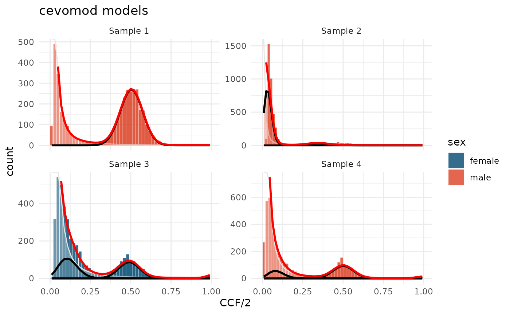

Data preparation
<cevodata> S3 class
Most of the cevomod functions use the <cevodata>
S3 class which is designed to store both, the data and the cevomod
result. The <cevodata> object can be easily created
using the init_cevodata(name) constructor and populated
with data using the add_*_data() methods.
In this tutorial we will use the test_data dataset
provided with cevomod, which contains 3 male samples and 1 female
sample.
suppressPackageStartupMessages({
library(cevomod)
library(tidyverse)
})
theme_set(theme_minimal())
snvs <- SNVs(test_data)
cnvs <- CNVs(test_data)
sample_data <- test_data$metadataSNVs tibble should contain at least sample_id, chrom, pos and VAF columns. Any other columns are optional.
snvs
#> <cevo_snvs> tibble
#> # A tibble: 16,000 × 11
#> sample_id chrom pos gene_symbol ref alt ref_reads alt_reads impact
#> * <chr> <chr> <int> <chr> <chr> <chr> <dbl> <dbl> <chr>
#> 1 Sample 1 chr1 1 NA NA NA 25 29 NA
#> 2 Sample 1 chr1 2 NA NA NA 22 19 NA
#> 3 Sample 1 chr1 3 NA NA NA 21 20 NA
#> 4 Sample 1 chr1 4 NA NA NA 34 2 NA
#> 5 Sample 1 chr1 5 NA NA NA 62 1 NA
#> 6 Sample 1 chr1 6 NA NA NA 4 3 NA
#> 7 Sample 1 chr1 7 NA NA NA 33 34 NA
#> 8 Sample 1 chr1 8 NA NA NA 31 30 NA
#> 9 Sample 1 chr1 9 NA NA NA 25 17 NA
#> 10 Sample 1 chr1 10 NA NA NA 41 31 NA
#> # ℹ 15,990 more rows
#> # ℹ 2 more variables: VAF <dbl>, DP <int>We will use also some sample metadata which associates samples to patients and stores the data on patients’ sex and samples’ purity.
sample_data
#> # A tibble: 4 × 4
#> sample_id patient_id sex purity
#> <chr> <chr> <chr> <dbl>
#> 1 Sample 1 Patient 1 male 1
#> 2 Sample 2 Patient 2 male 0.7
#> 3 Sample 3 Patient 3 female 1
#> 4 Sample 4 Patient 4 male 1cevomod functions are pipe-oriented (in general), so we can create and populate the object through the small pipeline:
cd <- init_cevodata(name = "Demo data") |>
add_SNV_data(snvs) |>
add_sample_data(sample_data)
cd
#> <cevodata> dataset: Demo data
#> Genome: unknown
#> SNV assays: snvs (default)
#> CNV assays: None
#> 4 cases, 4 samples, 1 sample per case
#> 16000 mutations total, 4000 +/- 0 mutations per case
#> Active models:name can be any string that is informative for the
user.
To facilitate the use of cevomod with the data from popular
variant callers such as Mutect2, Strelka2, ASCAT, or FACETS, we have
implemented a readthis
package. readthis functions are designed for bulk reading of many
output variant files (they accept a path to a single file, named vector
of file paths, or a path to a directory containing many files). Data
objects read with readthis functions can be added to the cevodata object
with a single call of general add_data() function.
For more information see the readthis
page.
Variant Frequency Spectra
cevomod fits models to the distributions of variant frequencies in the sample. Variant Allele Frequency is a basic measure of variant frequency provided by next-generation sequencing and it’s equal to the fraction of reads supporting the alternate allele in all reads covering the mutation site
\[VAF = \frac{alt\_reads}{alt\_reads + ref\_reads}\]
VAF spectra can be plotted using the plot_SFS() function
(SFS - Site Frequency Spectrum). Like most of the cevomod
plotting functions, plot_SFS() returns a ggplot object
which can be easily modified. Additional aesthetics can be added using
the aes() and it can make use of the columns in the
metadata tibble, which is left-joined to the plot data.
plot_SFS(cd) +
aes(fill = sex) +
scale_fill_manual(values = c(male = "#DD4124", female = "#00496F")) +
labs(title = "Variant Allele Frequency Spectra")
#> Calculating SFS statistics
#> Calculating f intervals, using VAF column
#> Warning in geom_bar(join_aes(bar_mapping, mapping), stat = "identity", alpha =
#> alpha, : Ignoring unknown aesthetics: width
We can see that there are clear peaks of clonal mutations in all 4 samples. In 3 of them, the average frequency of the clonal variants equals 0.5, corresponding to a sample purity of 1. In Sample 2, the average frequency of clonal mutations is lower, which is in line with the lower purity of this sample:
cd$metadata |>
select(sample_id, purity)
#> # A tibble: 4 × 2
#> sample_id purity
#> <chr> <dbl>
#> 1 Sample 1 1
#> 2 Sample 2 0.7
#> 3 Sample 3 1
#> 4 Sample 4 1We can also notice small groups of mutations with VAF close to 1.0, which likely result from the looses of heterozygocity.
Calculation of the Cancer Cell Fraction (optional)
Although VAF is often used to model cancer evolution from the bulk
sequencing data, it is not an accurate measure of the true mutation
frequency. VAF values are affected by sample purity and copy number
alterations, as we saw in the VAF spectrum above. If we have the
reliable measurements of sample purity and copy number values, we can
take them into account and calculate the Cancer Cell Fraction (CCF),
fraction of cancer cells in which the mutation is present. A convenient
formula for calculating CCF was published by Dentro et al. in Principles of
Reconstructing the Subclonal Architecture of Cancers (2015). To
calculate CCF, cevomod requires the purity column in the
metadata tibble and the CNVs tibble with the following columns:
- sample_id
- chrom
- start
- end
- total_cn - containing information about the total number of sequence copies,
- normal_cn - containing information about the sequence ploidy in normal cells.
cnvs
#> # A tibble: 8 × 8
#> sample_id chrom start end total_cn major_cn minor_cn normal_cn
#> <chr> <chr> <dbl> <dbl> <dbl> <dbl> <dbl> <dbl>
#> 1 Sample 1 chr1 1 4000 2 1 0 2
#> 2 Sample 1 chr2 1 4000 1 1 0 2
#> 3 Sample 2 chr1 1 4000 2 1 0 2
#> 4 Sample 2 chr2 1 4000 1 1 0 2
#> 5 Sample 3 chr1 1 4000 2 1 0 2
#> 6 Sample 3 chr2 1 4000 1 1 0 2
#> 7 Sample 4 chr1 1 4000 2 1 0 2
#> 8 Sample 4 chr2 1 4000 1 1 0 2We can add the CNV data to the cevodata object using the
add_CNV_data() function.
cd <- cd |>
add_CNV_data(cnvs)
cd
#> <cevodata> dataset: Demo data
#> Genome: unknown
#> SNV assays: snvs (default)
#> CNV assays: cnvs (default)
#> 4 cases, 4 samples, 1 sample per case
#> 16000 mutations total, 4000 +/- 0 mutations per case
#> Active models:Now the CCF values can be calculated using the
calc_mutation_frequencies() function:
cd <- cd |>
calc_mutation_frequencies()
#> 0 variants (0 %), have NA CCF valuewhich will add CCF and CCF/2 columns to the SNVs tibble. cevomod will use the CCF/2 values by default starting from now.
plot_SFS(cd) +
aes(fill = sex) +
scale_fill_manual(values = c(male = "#DD4124", female = "#00496F"))
#> Calculating SFS statistics
#> Calculating f intervals, using CCF/2 column
#> Warning in geom_bar(join_aes(bar_mapping, mapping), stat = "identity", alpha =
#> alpha, : Ignoring unknown aesthetics: widthIn the new mutation frequency spectra, we can see that an average CCF/2 values of clonal peaks are now equal to 0.5 in all samples, and that no mutation has the CCF/2 value close to 1.
Intervalization of variant frequencies
Before fitting the models, we need to binarize the mutation frequency
values, which we can do using the
intervalize_mutation_frequencies() function. cevomod will
use CCF/2 values if CCF has been calculated before, and VAF if the CCF
column does not is not found in the tibble.
intervalize_mutation_frequencies() adds the f
and f_interval column to the SNVs tibble. By default, the
number of bins is equal to the median sequencing coverage of the
variants in the sample. This allows to reduce aliasing noise in samples
with low sequencing depth and to analyze samples with higher coverage
with higher resolution. The desired number of bins can also be specified
manually using the bins argument. We will also calculate
the SFS spectra in this step, so the downstream functions do not have to
do it on their own.
cd <- cd |>
intervalize_mutation_frequencies() |>
calc_SFS()
#> Calculating f intervals, using CCF/2 column
#> Calculating SFS statistics
SNVs(cd) |>
glimpse()
#> Rows: 16,000
#> Columns: 15
#> $ sample_id <chr> "Sample 1", "Sample 1", "Sample 1", "Sample 1", "Sample 1"…
#> $ chrom <chr> "chr1", "chr1", "chr1", "chr1", "chr1", "chr1", "chr1", "c…
#> $ pos <int> 1, 2, 3, 4, 5, 6, 7, 8, 9, 10, 11, 12, 13, 14, 15, 16, 17,…
#> $ gene_symbol <chr> NA, NA, NA, NA, NA, NA, NA, NA, NA, NA, NA, NA, NA, NA, NA…
#> $ ref <chr> NA, NA, NA, NA, NA, NA, NA, NA, NA, NA, NA, NA, NA, NA, NA…
#> $ alt <chr> NA, NA, NA, NA, NA, NA, NA, NA, NA, NA, NA, NA, NA, NA, NA…
#> $ ref_reads <dbl> 25, 22, 21, 34, 62, 4, 33, 31, 25, 41, 42, 64, 32, 29, 42,…
#> $ alt_reads <dbl> 29, 19, 20, 2, 1, 3, 34, 30, 17, 31, 1, 1, 25, 31, 40, 1, …
#> $ impact <chr> NA, NA, NA, NA, NA, NA, NA, NA, NA, NA, NA, NA, NA, NA, NA…
#> $ VAF <dbl> 0.536, 0.462, 0.488, 0.078, 0.030, 0.444, 0.507, 0.483, 0.…
#> $ CCF <dbl> 1.072, 0.924, 0.976, 0.156, 0.060, 0.888, 1.014, 0.966, 0.…
#> $ `CCF/2` <dbl> 0.536, 0.462, 0.488, 0.078, 0.030, 0.444, 0.507, 0.483, 0.…
#> $ f_interval <chr> "(0.529,0.549]", "(0.451,0.471]", "(0.471,0.49]", "(0.0588…
#> $ f <dbl> 0.5390, 0.4610, 0.4805, 0.0686, 0.0294, 0.4410, 0.5000, 0.…
#> $ DP <int> 54, 41, 41, 36, 63, 7, 67, 61, 42, 72, 43, 65, 57, 60, 82,…Now we are ready to fit the cevomod models.
Model fitting
Once the SNVs are prepared, the models can be fitted using the
fit_*() functions. Full models consist of the power-law
component and one or more binomial components, which are fitted
sequentially.
In this example, we first fit the power-law model with an exponent of 2, and then the mixture of binomial models. By default, clonal and subclonal components are fitted using BMix package (Caravagna et al., 2020). See other methods for fitting these components in Fitting models/Binomial components vignette.
cd <- cd |>
fit_powerlaw_tail_fixed() |>
fit_subclones()
#> Fitting binomial models using BMix
#> Warning: replacing previous import 'cli::num_ansi_colors' by
#> 'crayon::num_ansi_colors' when loading 'BMix'
#> Warning: replacing previous import 'crayon::%+%' by 'ggplot2::%+%' when loading
#> 'BMix'
#> ✔ Loading BMix, 'Binomial and Beta-Binomial univariate mixtures'. Support : <https://caravagnalab.github.io/BMix/>
#> Fitting williams neutral models...
#> Mf_1f's not calculated yet. Calculating with default bins
#> Calculating Williams's M(f) ~ 1/f statistics, using CCF/2 column
#> Warning: There was 1 warning in `reframe()`.
#> ℹ In argument: `fit_binomial_models_BMix(.data$data, N, pb, verbose)`.
#> ℹ In row 1.
#> Caused by warning:
#> ! replacing previous import 'cli::num_ansi_colors' by 'crayon::num_ansi_colors' when loading 'easypar'
cd
#> <cevodata> dataset: Demo data
#> Genome: unknown
#> SNV assays: snvs (default)
#> CNV assays: cnvs (default)
#> 4 cases, 4 samples, 1 sample per case
#> 16000 mutations total, 4000 +/- 0 mutations per case
#> Active models: powerlaw_fixed_subclonesA list of all fitted models can be obtained with:
get_model_names(cd)
#> [1] "SFS" "powerlaw_fixed"
#> [3] "powerlaw_fixed_subclones"and the last fitted model is the active one:
active_models(cd)
#> [1] "powerlaw_fixed_subclones"Models can be viewed with the get_models() function:
get_models(cd, which = "powerlaw_fixed")
#> # A tibble: 4 × 11
#> sample_id model component from to length A b alpha rsquared best
#> <chr> <chr> <chr> <dbl> <dbl> <dbl> <dbl> <dbl> <dbl> <dbl> <lgl>
#> 1 Sample 1 power… Neutral … 0.045 0.095 0.05 46.6 2339. 2 1.00 TRUE
#> 2 Sample 2 power… Neutral … 0.245 0.295 0.05 15.1 360. 2 0.989 TRUE
#> 3 Sample 3 power… Neutral … 0.285 0.335 0.0500 104. 609. 2 0.986 TRUE
#> 4 Sample 4 power… Neutral … 0.245 0.295 0.0500 78.8 747. 2 0.996 TRUEThe active model is returned if the which argument is
left empty:
get_models(cd)
#> # A tibble: 13 × 16
#> sample_id model component from to length A b alpha rsquared
#> <chr> <chr> <chr> <dbl> <dbl> <dbl> <dbl> <dbl> <dbl> <dbl>
#> 1 Sample 1 binomia… Clone NA NA NA NA NA NA NA
#> 2 Sample 1 powerla… Neutral … 0.045 0.095 0.05 46.6 2339. 2 1.00
#> 3 Sample 2 binomia… Clone NA NA NA NA NA NA NA
#> 4 Sample 2 binomia… Subclone… NA NA NA NA NA NA NA
#> 5 Sample 2 powerla… Neutral … 0.245 0.295 0.05 15.1 360. 2 0.989
#> 6 Sample 3 binomia… Clone NA NA NA NA NA NA NA
#> 7 Sample 3 binomia… Subclone… NA NA NA NA NA NA NA
#> 8 Sample 3 binomia… Subclone… NA NA NA NA NA NA NA
#> 9 Sample 3 powerla… Neutral … 0.285 0.335 0.0500 104. 609. 2 0.986
#> 10 Sample 4 binomia… Clone NA NA NA NA NA NA NA
#> 11 Sample 4 binomia… Subclone… NA NA NA NA NA NA NA
#> 12 Sample 4 binomia… Subclone… NA NA NA NA NA NA NA
#> 13 Sample 4 powerla… Neutral … 0.245 0.295 0.0500 78.8 747. 2 0.996
#> # ℹ 6 more variables: best <lgl>, N <int>, cellularity <dbl>,
#> # N_mutations <int>, BIC <dbl>, sequencing_DP <dbl>The tibble lists the components for all models and samples. Binomial components are called either the clones or the subclones. The component with the highest cellular frequency is called the clone, and the remaining components are called subclones. This distinction is important when estimating the subclonal evolutionary parameters: the main clones are not under positive selection in the tumor, so we only estimate the evolutionary parameters for the subclones.
Plot models
The fitted models can be visualized with the
plot_models() function:
plot_models(cd) +
aes(fill = sex) +
scale_fill_manual(values = c(male = "#DD4124", female = "#00496F")) +
labs(title = "cevomod models")
#> Warning in geom_bar(join_aes(bar_mapping, mapping), stat = "identity", alpha =
#> alpha, : Ignoring unknown aesthetics: width
The model fitted to sample 2 is very inaccurate. The slope of the distribution is too steep to be approximated by the power-law exponent of 2. This sample should not be fitted with the model with the fixed power-law component. We will ignore this fit when estimating the evolutionary parameters.
Evolutionary parameters
The evolutionary parameters for the subclones can be calculated using the equations provided by Williams et al. (2018). Williams assumes an exponential tumor growth and a constant mutation rate, under which the power-law exponent equals 2, so we can use the equations with the models we fitted. In cevomod, we use the code and functions implemented in the MOBSTER package to calculate the parameters. We should not use the model for Sample 2, though. The mutation rate is severely underestimated, and the model fit is inaccurate. One should evaluate the fitted models carefully, before continuing with the analysis.
Mutation rates can be obtained with
get_mutation_rates(), and the selection coefficients with
get_selection_coefficients() functions. Both functions can
be run on the cevodata objects (with the correct models fitted), or on
the model tibbles directly. This allows us to manually correct the model
tibbles before the calculation of the evolutionary parameters.
For example, one can get filter Sample 2 out from the cevodata object:
cd |>
filter(sample_id != "Sample 2") |>
get_models() |>
get_mutation_rates()
#> # A tibble: 3 × 2
#> sample_id mutation_rate_williams
#> <chr> <dbl>
#> 1 Sample 1 46.6
#> 2 Sample 3 104.
#> 3 Sample 4 78.8or from the models tibble:
cd |>
get_models() |>
filter(sample_id != "Sample 2") |>
get_selection_coefficients()
#> # A tibble: 4 × 8
#> sample_id mutation_rate_williams component N_mutations subclone_frequency
#> <chr> <dbl> <chr> <int> <dbl>
#> 1 Sample 3 104. Subclone 1 724 0.982
#> 2 Sample 3 104. Subclone 2 785 0.236
#> 3 Sample 4 78.8 Subclone 1 824 1.00
#> 4 Sample 4 78.8 Subclone 2 366 0.183
#> # ℹ 3 more variables: emergence_time <dbl>, time_end <dbl>, selection <dbl>